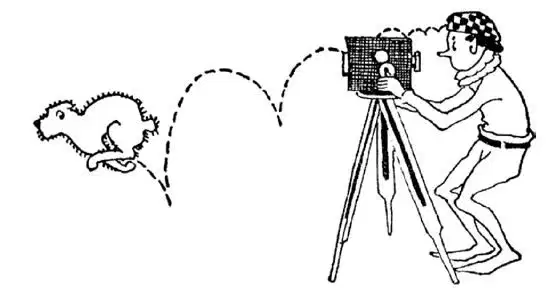

15
The ‘Est,’ Est West
“之最”最多的西部

A LAND where they have the b-est, the bigg-est, the fin-est, the highest, the loveli-est of everything—so they say—the best oranges, the biggest prunes, the finest grapes, the tallest trees, the highest mountains, the loveliest weather—i. t. w. W. No, it’s not Paradise. That’s the ’est, ’est West.
California was named after an island in an old fairy-tale and in many ways the real California is a fairy-tale land. When gold was found in the rivers there, the story sounded like a fairy-tale, but it turned out to be a true tale. Many stories they tell nowadays about California still sound like fairy-tales to people in the East. Who would believe that there are trees in California so tall they seem to brush the sky—trees so big around that men have cut tunnels in them for automobiles to go through—trees so old that they were born before Christ was born! It’s true, there are. They are called Giant Redwoods. How more wonderful than a fairy-tale it would be if those trees could tell us the true story of what has happened in their long lives!
Let us see how many ’ests we can count in California.
California is the longest State in the United States. If you could take up California and put it down on the Atlantic coast it would stretch from Florida to New York. That’s one ’est .
California has the highest mountain in the United States. It is called Mount Whitney. That’s two ’ests .
California has the lowest place in America. It’s a valley, and the valley is more than two hundred feet lower than the ocean. It is so dry and so hot down in this hollow—this lowest spot—that nothing can live there, either animal or vegetable, except horned toads and lizards, both of which animals love heat—the more heat the better for them. Some people say they can even live in fire—but that’s a fairy-tale. This low hot valley is called Death Valley. People usually keep away from it, but some men have strayed into it looking for gold and have lost their way, or some who wanted to get to the other side tried to cross it and before they could get out or reach the other side they have died of heat or thirst. That’s why it is called Death Valley. That’s longest, highest, lowest—three ’ests .
Besides Death Valley, California has another valley—but this is one of the loveliest valleys. It is called the Yosemite. It is a very deep trough, and streams of water fall over the edge into the trough from many high places. One of these falls turns to mist before it reaches the ground and looks like a huge veil of a bride, so it is called Bridal Veil Falls. Half a dozen of these waterfalls in the Yosemite Valley are higher than Niagara, and two of them tumble headlong a quarter of a mile from the top to the bottom of the valley, the highest falls in America—loveliest valley, highest falls; that makes two more ’ests .
California has, beside these ’ests , the sweetest oranges, the sourest lemons, the biggest grape-fruit, so they say, but they didn’t come from California; they went there. There were no oranges and no lemons growing in America at all before white men came to this country. The first white people to settle in California came from the country of Spain on the other side of the Atlantic Ocean. In Spain oranges and lemons grew, and the people from Spain, called Spaniards, brought over orange and lemon plants and started them growing in California and also in Florida.
The Spaniards built houses like those back in Spain, with white stucco walls and red tile roofs and with the “back yards” in the center of the house. They gave their cities Spanish names—Los Angeles, which means The Angels; and they named many of their cities after saints—San Francisco after St. Francis, Santa Barbara after St. Barbara—for many of the Spaniards were priests, who built mission churches up and down the land.
The City of the Angels is now the largest city on the Pacific coast. Near the City of the Angels is Hollywood, the greatest (another ’est ) moving-picture place i. t. w. W. There are 365 days in the year, as you know, but in Hollywood they say the sun shines on 400 days a year—fairy-tale land! At any rate, the weather is fine most of the time for taking moving pictures. This is one reason why it is such a good place for making movies, but another is that there are so many different kinds of natural scenery near-by. If they want to make a picture of a ship scene or shipwreck, there is the ocean. If they want to make a picture of the desert with camels and Arabs, there is the seashore. If they want to make a picture in the hot countries, there are palms and flowers. If they want to make pictures of winter scenes, all they have to do is to go to the mountains near-by and there is snow and ice all the year round.
The city of San Francisco on the coast north of Los Angeles is nearly as large as Los Angeles. It might have been larger, but not so many years ago a terrible earthquake shook down the city. The quake only lasted a few minutes, but in that few minutes it rocked the city, cracked open the ground, and knocked down buildings as if they were houses of children’s blocks, and hundreds and hundreds of people were killed. But the worst thing the earthquake did was to upset stoves and lamps that started one of the worst fires ever known—fires that burned up most of the city. Were the people discouraged? Not at all. They collected their insurance money—and they built the city up again.

Hollywood is the greatest moving-picture place in the wide World
好莱坞是世界上最大的电影制作地
San Francisco has one of the finest harbors in the World. Its harbor is a long bay—fifty miles long. Ships enter the harbor from the Pacific Ocean through an opening called the Golden Gate. The city is built on many hills so steep that it is difficult for automobiles to climb them, but houses built on them have lovely views of the ocean, the bay, or the Golden Gate. Across the Golden Gate is a huge suspension bridge much bigger than the Brooklyn Bridge.
Ships enter and leave San Francisco for all the countries on and across the Pacific Ocean. Across the Pacific Ocean are China and Japan, and in days gone by so many Chinese came to the United States and landed in San Francisco that there is a part of the city called Chinatown, where there are Chinese houses and shops and theaters. Many Japanese too came to the United States from Japan, and bought farms where they raised fruits and vegetables.
【中文阅读】
据说有个地方，那里有最好、最大、最优、最高、最美的东西，如世界上最好吃的柑橘、最硕大的李子、最美味的葡萄、最高大的树木、最巍峨的山峰、最宜人的天气。是天堂吗？不，不是天堂。那就是拥有最多“之最”的美国西部。
加利福尼亚是以一个古老童话故事里的小岛命名的，而真正的加利福尼亚在很多方面都是一个童话般的地方。当人们在那里的河流里发现金子的时候，这样的事听起来就像是个童话，但结果证明这是一个真实的故事。人们现在讲的很多关于加利福尼亚的故事对东部的人来说仍然像是童话故事。谁会相信加利福尼亚有冲天大树——粗大的树干可以凿个洞，让汽车通过——有些树非常古老，在耶稣诞生前就开始生长了！是真的，真的有这样的树。它们叫做大红杉。如果这些树能告诉我们在它们漫长生命中发生过的真实故事，那一定比童话故事更加精彩啊！
让我们来数一数在加利福尼亚究竟有多少个“之最”吧。
加利福尼亚是美国“最”长的州。如果你能拿起加利福尼亚州，放到大西 洋沿岸，它将从佛罗里达延伸到纽约。这是一个“之最”。
加利福尼亚有美国“最”高的山，叫做惠特尼山。这是两个“之最”了。
加利福尼亚有美国的“最”低的地方。那是一个山谷，低于海平面200多英尺。这个最低点的山谷里极其干燥炎热，没有动植物能在里面生存，除了角蟾和蜥蜴，这两种动物都喜欢炎热的环境——越热越好。有人说它们甚至在火里也能生存——但那是童话里才发生的事。这个炎热的低谷叫做“死亡谷”。人们通常不会靠近死亡谷，但有人在找金子时误入其中而迷路，还有人想到另一面去，就尝试穿越死亡谷，但还没等他们走出去或到达对面就已经热死或渴死了。正因如此，它才叫死亡谷。这里就有三个“之最”了：最长，最高，最低。
除了死亡谷，加利福尼亚还有一个山谷——但这个是“最”美丽的山谷之一，叫做约塞米蒂谷。它是一个非常深的谷槽，股股溪流从很高处流过谷顶边缘直落下去，形成瀑布。其中一个瀑布落地之前就变成了薄雾，看起来就像新娘巨大的面纱，因此被叫做“新娘面纱瀑布”。约塞米蒂谷有六处瀑布都比尼亚加拉瀑布还要高，其中有两处从谷顶一泻而下直到谷底，高达四分之一英里，是美国最高的瀑布——最美的山谷，最高的瀑布；这样又有了两个“之最”。
除了这些“之最”外，加利福尼亚据说还有最甜的柑橘、最酸的柠檬和最大的葡萄柚，但这些水果原产地不是加利福尼亚；他们是“移居”到那儿去的。白人来美国定居前美国根本没有这几种水果。第一批到加利福尼亚定居的人来自于大西洋对岸的西班牙。西班牙盛产柑橘和柠檬，西班牙来的人，也就是西班牙人，带来了柑橘和柠檬的植株，开始在加利福尼亚州和佛罗里达州种植这两种水果。
西班牙人建造的房屋和西班牙国内的风格相似，有着白色拉毛粉饰的外墙和红瓦的屋顶，房屋中间还有“后院”。他们给他们建造的许多城市取了西班牙名——如“洛杉矶”市，意思是“天使之城”；他们还以圣人的名字给许多城市命名——如以圣弗朗西斯命名的圣弗朗西斯科市（旧金山），以圣巴巴拉命名的圣巴巴拉市——因为当时来美国的很多西班牙人是牧师，他们在这片土地上建造了很多教堂，进行传教活动。
“天使之城”现在是太平洋沿岸最大的城市，附近就是好莱坞，世界上最大的（又一个“之最”）电影制作地。你知道一年有365天，但是在好莱坞人们说一年有400天阳光照耀的日子——童话世界！不管怎么说，当地大多数时间天气都很好，适宜拍摄电影。这就是“天使之城”是拍电影的好地方的一个原因，但是另一个原因是好莱坞附近有各种各样的自然风景。如果他们想拍一个航海 镜头或海滩的场景，这里有海洋；如果他们想拍一个有骆驼和阿拉伯人的沙漠影片，这里有海滩；如果他们想拍一个热带地区的电影，这里有棕榈树和鲜花；如果他们想拍冬天场景的影片，他们只要爬到附近的山上，那里一年四季都是冰天雪地。
洛杉矶北面的沿海城市圣弗朗西斯科市（旧金山）几乎和洛杉矶一样大。以前或许比洛杉矶还要大一点，但是在没有多少年以前，一场可怕的地震震倒了整个城市。地震只持续了几分钟，但就在那短短几分钟里城市摇晃，地面断裂，楼房倒塌，就好像是小孩搭的积木房子说倒就倒，许许多多的人失去了生命。但地震造成的最严重的灾难是打翻了火炉和油灯从而引发了至今为止最严重的火灾之一——大火烧掉了这个城市的大部分。人们因此而丧失希望了吗？丝毫没有。他们领取了保险赔偿金——重新建起了这个城市。
圣弗朗西斯科有着世界上最好的港口之一。它的港口是一个长长的海湾——长达50英里。从太平洋来的船只通过一个叫做“金门”的海峡进入港口。这个城市建造在很多陡峭的山上，因此汽车很难爬上去，但建在山坡上房子里能看到很美的风景：大海、海湾和金门。横跨金门海峡的金门大桥是一个比布鲁克林大桥更大的巨大吊桥。
在圣弗朗西斯科进进出出的船只来自于太平洋上和对岸的所有国家。太平洋对岸是中国和日本，在以往的岁月里有许许多多的中国人不断来到美国在圣弗朗西斯科上岸，所以这里有个叫做“唐人街”的地方，唐人街有中国风格的房屋、商店和剧院。许多日本人也远离故土来到美国，他们买下农场种植水果和蔬菜。